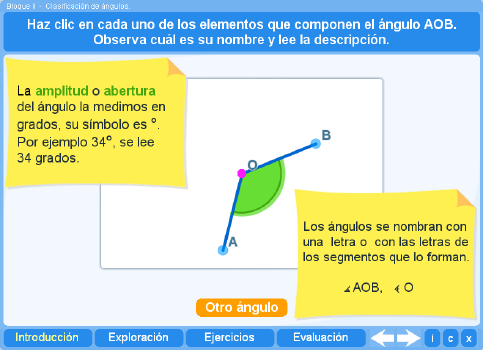
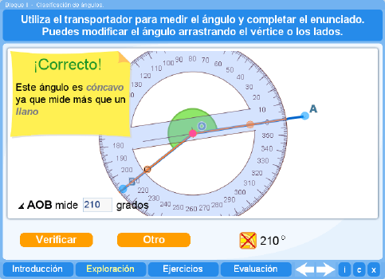
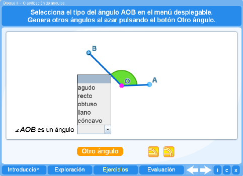
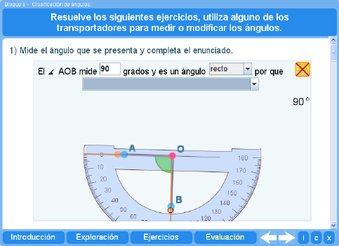
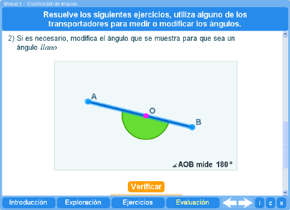

Objetivo
Aprender a reconocer los elementos de un ángulo y a clasificar los ángulos de acuerdo a su abertura.
Instrucciones generales
Se puede navegar entre los apartados con el menú de la parte inferior. Este menú aparece a lo largo de todo el interactivo y conserva su funcionalidad.

También se puede navegar por las escenas por medio de las flechas de navegación que aparecen en el lado inferior derecho del interactivo. Dentro de los apartados Exploración y Ejercicios es necesario utilizar estas flechas para acceder a las escenas sucesivas de dichos apartados.

En la parte inferior derecha del interactivo se encuentran los siguientes botones:
| Muestra la documentación del interactivo. | |
| Despliega los créditos correspondientes a este interactivo. | |
| Cierra el interactivo. |
Contenidos
Introducción
Al seleccionar cada elemento del ángulo se presenta su descripción. El alumno puede modificar el ángulo para explorar sus características.

Exploración 1
El alumno deberá medir los ángulos que se presentan aleatoriamente y tomar en cuenta la descripción dada, para luego completar un resumen de la clasificación de los ángulos.

Ejercicio
El alumno deberá identificar qué tipo de ángulos son los que se le presentan de manera aleatoria. Si lo considera necesario podrá hacer uso de los transportadores de 180 y 360 grados.

Evaluación
El alumno deberá medir el ángulo que se presenta y clasificarlo completando el enunciado.
.
La siguiente actividad consiste en modificar el ángulo de tal forma que corresponda al tipo de ángulo indicado. Se presenta su medida en grados.
Los ángulos que se presentan en ambos casos son aleatorios, una vez que se haya contestado ambas preguntas el alumno podrá realizar otras evaluaciones llevando un historial de las mismas.
| Los materiales aquí presentados utilizan el applet Descartes Web 2.0. | |

|
Los contenidos de esta unidad didáctica están bajo una licencia de Creative Commons. |